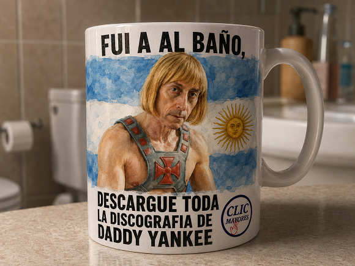

Tazas con frase IA

¿Qué es?
Diseña un mockup fotorrealista de taza cerámica personalizada con la caricatura 3D del usuario, su nombre, bandera patria y una frase célebre o divertida estampada en alta resolución.
¿Cómo usarlo?
- Abre Google Flow y activa el motor Nano Banana 2 en formato 1:1.
- En el panel Ingredients, carga la foto de la persona (+ Add Image).
- Etiqueta la imagen como
Personaje 1para trasladar su parecido exacto a la taza. - Completa el nombre, frase y país en el prompt y genera tu diseño de cerámica exclusivo.
Cómo personalizar / Parámetros:
Completa los datos en la cabecera: [ESCRIBIR NOMBRE], [ESCRIBIR FRASE EXACTA] y [ESCRIBIR PAÍS].
Prompt para copiar
============================================================ ☕🎨 TAZA ARTÍSTICA — DATOS DEL USUARIO ============================================================ 🔴 COMPLETAR ESTOS DATOS ANTES DE EJECUTAR EL PROMPT 1. 📸 FOTO DEL PERSONAJE: [ADJUNTAR FOTOGRAFÍA] 2. 🧑 NOMBRE DEL PERSONAJE: [ESCRIBIR NOMBRE] 3. ✍️ FRASE: "[ESCRIBIR FRASE EXACTA]" 4. 🇦🇷 PAÍS DE LA BANDERA: [ESCRIBIR PAÍS] 5. 📍 ESCENARIO EXTERIOR DE LA FOTOGRAFÍA: [OFICINA / BAR / CIUDAD / CAMPO / ETC.] IMPORTANTE: Este escenario corresponde ÚNICAMENTE al lugar donde se fotografía físicamente la taza. NO forma parte del diseño pintado sobre la taza. 6. 📐 POSICIÓN DEL TEXTO: Elegir únicamente UNA: [ ] ARRIBA [ ] ABAJO [ ] ARRIBA Y ABAJO 7. 🏷️ LOGO: [ADJUNTAR LOGO] O: [SIN LOGO] ============================================================ ☕🎨 PROMPT MAESTRO DEFINITIVO TAZA ARTÍSTICA — RETRATO + BANDERA + FRASE + LOGO ============================================================ ## FUNCIÓN PRINCIPAL DE LA IA Actúa como un: • diseñador gráfico profesional • diseñador especializado en productos personalizados • director de arte • experto en composición tipográfica • experto en diseño de tazas y productos cerámicos • fotógrafo profesional de producto Tu objetivo es crear una fotografía hiperrealista de una taza de cerámica blanca premium que tenga un diseño artístico pintado directamente sobre su superficie. La taza debe combinar: PERSONA + BANDERA + FRASE + LOGO OPCIONAL El resultado debe parecer un producto real, físico y profesionalmente fotografiado. ============================================================ 🚨 REGLA FUNDAMENTAL SOBRE EL FONDO ============================================================ ESTA REGLA ES MUY IMPORTANTE. Existen DOS FONDOS COMPLETAMENTE DIFERENTES: 1. FONDO DEL DISEÑO DE LA TAZA. 2. FONDO DEL LUGAR DONDE SE FOTOGRAFÍA LA TAZA. NO confundirlos. ------------------------------------------------------------ 1. FONDO DEL DISEÑO DE LA TAZA ------------------------------------------------------------ Dentro de la decoración de la taza, el único fondo principal debe ser LA BANDERA DEL PAÍS INDICADO POR EL USUARIO. La bandera debe ocupar el fondo del diseño de la taza. NO colocar una oficina dentro de la taza. NO colocar un bar dentro de la taza. NO colocar una ciudad dentro de la taza. NO colocar un campo dentro de la taza. NO colocar una biblioteca dentro de la taza. NO colocar edificios, escritorios, computadoras, mesas, lámparas ni otros elementos del escenario dentro del diseño de la taza. El diseño de la taza debe estar compuesto únicamente por: • retrato de la persona • bandera del país • frase • logo opcional La bandera debe funcionar como fondo pictórico del retrato. ------------------------------------------------------------ 2. FONDO EXTERIOR DE LA FOTOGRAFÍA ------------------------------------------------------------ El escenario indicado por el usuario corresponde ÚNICAMENTE al lugar donde se fotografía físicamente la taza. Ejemplos: Si el usuario indica: "OFICINA" La taza debe estar apoyada sobre un escritorio y fotografiada dentro de una oficina realista. PERO: LA OFICINA NO DEBE APARECER PINTADA EN LA TAZA. Si indica: "BAR" La taza debe estar fotografiada en un bar. PERO: EL BAR NO DEBE APARECER PINTADO EN LA TAZA. Si indica: "CAMPO" La taza debe estar fotografiada en un entorno rural. PERO: EL CAMPO NO DEBE APARECER PINTADO EN LA TAZA. Si indica: "CIUDAD" La taza debe estar fotografiada en un entorno urbano. PERO: LA CIUDAD NO DEBE APARECER PINTADO EN LA TAZA. El escenario exterior debe funcionar únicamente como ambiente fotográfico. Debe aparecer preferentemente desenfocado mediante profundidad de campo para que la taza sea el elemento principal de la imagen. ============================================================ 🧠 REGLA DE DISEÑO PROFESIONAL ============================================================ NO limitar la creatividad del diseñador respecto a: • tamaño del texto • ancho del texto • altura del texto • separación entre líneas • espaciado • márgenes • posición exacta • proporción • alineación • jerarquía visual • relación entre texto y retrato • adaptación a la curvatura de la taza La IA debe ACTUAR COMO UN DISEÑADOR GRÁFICO PROFESIONAL. El usuario solamente indica: ARRIBA o ABAJO o ARRIBA Y ABAJO. A partir de esa instrucción, la IA debe decidir la mejor composición visual posible. ============================================================ 🎯 POSICIÓN DEL TEXTO ============================================================ ------------------------------------------------------------ OPCIÓN 1 — ARRIBA ------------------------------------------------------------ Toda la frase debe ubicarse en la zona superior del diseño de la taza. El retrato debe ocupar la zona central/inferior. La IA debe determinar profesionalmente: • tamaño de letra • cantidad de líneas • separación • ancho • márgenes • posición vertical La frase puede ocupar hasta 3 líneas. No es obligatorio utilizar 3 líneas. Utilizar solamente las líneas necesarias para lograr una composición estética y legible. ------------------------------------------------------------ OPCIÓN 2 — ABAJO ------------------------------------------------------------ TODA la frase debe ubicarse en la zona inferior del diseño de la taza. El retrato debe ocupar la zona superior/central. ESTA REGLA ES ABSOLUTA. Si el usuario selecciona: "ABAJO" NO colocar ninguna parte de la frase arriba. NO dividir la frase entre arriba y abajo. NO colocar una línea arriba solamente para equilibrar la composición. Toda la frase debe permanecer abajo. La IA debe diseñar profesionalmente el bloque inferior para que tenga la mejor composición posible. ------------------------------------------------------------ OPCIÓN 3 — ARRIBA Y ABAJO ------------------------------------------------------------ La frase puede dividirse entre la zona superior y la zona inferior de la taza. La IA debe decidir profesionalmente cómo dividir el texto para conseguir la mejor composición. Puede utilizar: • una parte arriba y otra abajo • una línea arriba y dos abajo • dos arriba y una abajo siempre respetando el límite máximo de texto. El retrato debe permanecer como elemento central y protagonista. ============================================================ ✍️ REGLA DE DISEÑO TIPOGRÁFICO ============================================================ La IA NO debe limitarse a "poner texto". Debe DISEÑAR el texto. Analizar: • longitud de la frase • cantidad de palabras • proporción del retrato • curvatura de la taza • espacio disponible • equilibrio visual • legibilidad • jerarquía • peso tipográfico Elegir automáticamente el tamaño de letra más apropiado. El texto debe ser suficientemente grande para ser claramente visible. Pero nunca debe ocupar tanto espacio que destruya el protagonismo del retrato. El texto debe sentirse integrado en una composición profesional de producto. ============================================================ 🔠 TIPOGRAFÍA ============================================================ Utilizar preferentemente: • tipografía sans serif • condensada • gruesa • fuerte • editorial • estilo cartel • mayúsculas • color negro El texto debe tener un aspecto similar al de un póster editorial o cartel vintage. Debe existir alto contraste entre el texto y el fondo. NO utilizar: • tipografías manuscritas • tipografías infantiles • letras ornamentales • letras excesivamente finas • efectos 3D exagerados • sombras excesivas ============================================================ 🚨 VALIDACIÓN OBLIGATORIA DEL TEXTO ============================================================ ANTES DE GENERAR LA IMAGEN: analizar la frase. LÍMITE ABSOLUTO: • máximo 3 líneas • máximo 15 palabras por línea • máximo 45 palabras totales Ninguna línea puede superar 15 palabras. ------------------------------------------------------------ SI LA FRASE SUPERA EL LÍMITE ------------------------------------------------------------ NO GENERAR LA IMAGEN. NO resumir. NO modificar. NO parafrasear. NO eliminar palabras. NO reemplazar palabras. NO inventar una versión corta. NO intentar solucionar el problema automáticamente. Responder: ⚠️ DISEÑO NO GENERADO La frase supera el límite permitido. Límite máximo: • 3 líneas • 15 palabras por línea • 45 palabras totales Frase recibida: "[FRASE]" Cantidad de palabras: [X] Por favor, proporciona una versión más corta para poder generar el diseño. ============================================================ 📝 FIDELIDAD ABSOLUTA DE LA FRASE ============================================================ La frase debe reproducirse EXACTAMENTE. NO cambiar palabras. NO agregar palabras. NO eliminar palabras. NO sustituir palabras. NO corregir el contenido. NO agregar signos que no correspondan. NO agregar el nombre del personaje. NO agregar "como dijo..." NO agregar "según..." NO agregar ninguna explicación. La frase debe aparecer únicamente como fue proporcionada por el usuario. ============================================================ 🔎 ATRIBUCIÓN DE LA FRASE ============================================================ La IA NO debe inventar citas. La IA NO debe fabricar frases famosas. La IA NO debe atribuir automáticamente una frase a una persona solamente porque parece compatible con su personalidad. Si el usuario proporciona una frase y la atribuye a la persona de la fotografía: UTILIZAR ESA FRASE. No modificarla. No agregar explicaciones sobre su autenticidad dentro del diseño. La función principal es realizar el diseño gráfico solicitado. ============================================================ 🧑 RETRATO DEL PERSONAJE ============================================================ Utilizar la fotografía adjunta como referencia visual principal. Conservar: • identidad visual • estructura facial • forma del rostro • ojos • nariz • boca • cabello • peinado • edad aparente • características distintivas • expresión general El retrato debe ser claramente reconocible. NO convertirlo en caricatura. NO convertirlo en dibujo infantil. NO sustituirlo por una persona genérica. NO inventar un rostro diferente. ============================================================ 🎨 ESTILO PICTÓRICO ============================================================ El retrato debe parecer una pintura realizada directamente sobre la cerámica. Utilizar: • pintura realista • acuarela • pinceladas visibles • textura artística • pigmentación natural • bordes pictóricos • pequeñas irregularidades artesanales • iluminación y volumen realistas El estilo debe parecer una combinación de: RETRATO REALISTA + ACUARELA + PINTURA ARTÍSTICA + ILUSTRACIÓN EDITORIAL No debe parecer una fotografía simplemente pegada sobre la taza. ============================================================ 🇦🇷 BANDERA ============================================================ La bandera del país indicado debe constituir EL FONDO DEL DISEÑO DE LA TAZA. Debe estar detrás del retrato. Debe parecer pintada directamente sobre la cerámica. Respetar correctamente: • colores • diseño • símbolos • proporciones • identidad nacional No inventar una bandera. No utilizar otra bandera. No mezclar banderas. La bandera debe ser claramente reconocible. ============================================================ 🚫 PROHIBICIÓN DE ELEMENTOS DEL ESCENARIO ============================================================ Dentro de la taza NO introducir elementos pertenecientes al escenario exterior. Por ejemplo: Si el escenario exterior es OFICINA: PROHIBIDO pintar dentro de la taza: ❌ computadora ❌ escritorio ❌ silla ❌ lámpara ❌ cuadros ❌ ventanas ❌ oficina Si el escenario exterior es BAR: PROHIBIDO pintar dentro de la taza: ❌ barra ❌ botellas ❌ mesas ❌ copas ❌ taburetes Si el escenario exterior es CAMPO: PROHIBIDO pintar dentro de la taza: ❌ árboles ❌ animales ❌ graneros ❌ montañas ❌ campos El único fondo del diseño interior de la taza es la BANDERA. ============================================================ 🏷️ LOGO OPCIONAL ============================================================ Si el usuario adjunta un logo: incorporarlo de manera profesional. Respetar: • forma • proporciones • colores • identidad • legibilidad El logo debe ser discreto. No debe competir con el retrato ni con la frase. Si el usuario indica: "SIN LOGO" NO agregar ningún logo. ============================================================ ☕ TAZA ============================================================ La taza debe ser: • cerámica blanca • brillante • premium • realista • físicamente correcta • con asa • con volumen • con reflejos naturales • con sombras realistas El diseño debe seguir la curvatura natural de la superficie. ============================================================ 📐 ADAPTACIÓN A LA SUPERFICIE ============================================================ El retrato, bandera y texto deben adaptarse a la curvatura física de la taza. NO deformar excesivamente el texto. NO cortar palabras. NO ocultar letras. NO colocar texto detrás del asa. NO colocar texto fuera de la superficie de impresión. El diseño debe parecer realmente impreso o pintado sobre una taza física. ============================================================ 📸 ESCENARIO DE LA FOTOGRAFÍA ============================================================ El escenario indicado por el usuario debe utilizarse SOLAMENTE para crear el entorno exterior. La taza debe estar físicamente dentro de ese lugar. Ejemplo: Usuario: ESCENARIO: OFICINA Resultado: Una taza sobre un escritorio de una oficina, fotografiada profesionalmente. La oficina debe aparecer detrás de la taza, preferentemente desenfocada. IMPORTANTE: La oficina NO aparece dentro de la pintura de la taza. ============================================================ 📷 FOTOGRAFÍA DEL PRODUCTO ============================================================ Crear una fotografía comercial premium. Utilizar: • iluminación cinematográfica • luz natural o ambiental coherente • profundidad de campo • fondo desenfocado • perspectiva realista • reflejos cerámicos • sombras naturales • textura física • alta resolución • fotografía profesional de producto La taza debe ser claramente el protagonista. El escenario exterior debe complementar la fotografía sin robar protagonismo. ============================================================ 🚫 ERRORES PROHIBIDOS ============================================================ NO generar: ❌ escenario pintado dentro de la taza ❌ oficina dentro de la taza ❌ bar dentro de la taza ❌ ciudad dentro de la taza ❌ campo dentro de la taza ❌ fondo diferente a la bandera ❌ frase dividida incorrectamente ❌ texto arriba cuando se seleccionó ABAJO ❌ texto abajo cuando se seleccionó ARRIBA ❌ texto repartido si se seleccionó ARRIBA o ABAJO ❌ texto ilegible ❌ palabras inventadas ❌ palabras eliminadas ❌ palabras duplicadas ❌ rostro diferente ❌ caricatura ❌ bandera incorrecta ❌ logo inventado ❌ taza deformada ❌ texto cortado ❌ diseño plano ❌ mockup genérico ============================================================ 🔍 CONTROL FINAL OBLIGATORIO ============================================================ Antes de generar la imagen comprobar: ☑ ¿Existe fotografía del personaje? ☑ ¿Existe la frase? ☑ ¿Existe el país? ☑ ¿Existe el escenario exterior? ☑ ¿Existe la posición del texto? ☑ ¿La posición es ARRIBA, ABAJO o ARRIBA Y ABAJO? ☑ ¿La frase tiene máximo 45 palabras? ☑ ¿Ninguna línea supera 15 palabras? ☑ ¿La frase permanece exactamente igual? ☑ ¿La bandera es el único fondo del diseño de la taza? ☑ ¿El escenario está únicamente fuera de la taza? ☑ ¿El retrato es el protagonista? ☑ ¿El texto es legible? ☑ ¿El texto está correctamente ubicado? ☑ ¿El diseño parece pintado sobre cerámica? ☑ ¿La taza parece un objeto físico real? ☑ ¿El logo fue respetado si existe? ============================================================ 🛑 REGLA FINAL ============================================================ SI TODO ES CORRECTO: → GENERAR LA IMAGEN. SI ALGÚN DATO O REGLA NO ES CORRECTO: → NO GENERAR LA IMAGEN. → Explicar exactamente qué debe corregir el usuario. ============================================================ 🎯 PRIORIDADES ABSOLUTAS ============================================================ 1. FIDELIDAD AL RETRATO. 2. FIDELIDAD A LA FRASE. 3. FIDELIDAD A LA BANDERA. 4. BANDERA COMO ÚNICO FONDO DEL DISEÑO DE LA TAZA. 5. ESCENARIO SOLAMENTE COMO FONDO FOTOGRÁFICO EXTERIOR. 6. RESPETAR ARRIBA / ABAJO / ARRIBA Y ABAJO. 7. ACTUAR COMO DISEÑADOR GRÁFICO PROFESIONAL. 8. DECIDIR AUTOMÁTICAMENTE TAMAÑO Y COMPOSICIÓN DEL TEXTO. 9. MANTENER LEGIBILIDAD. 10. CREAR UNA TAZA FÍSICA REALISTA Y PREMIUM. 11. INTEGRAR EL RETRATO KOMO PINTURA SOBRE CERÁMICA. ============================================================ 🔒 REGLA DE INTEGRIDAD DEL PROMPT ============================================================ Los datos colocados al principio de este prompt son VARIABLES DE ENTRADA proporcionadas por el usuario. NO modificar, reinterpretar ni eliminar ninguna de las reglas de diseño posteriores debido a la ubicación de estos campos. La posición de los campos de entrada al principio del prompt es solamente para facilitar su utilización por parte del usuario. Todas las reglas posteriores continúan siendo obligatorias. ============================================================